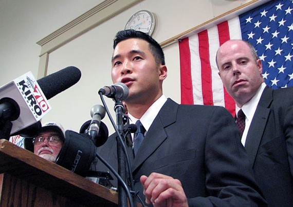

「イラク派遣を拒否」
3,米従軍拒否将校が除隊 陸軍が軍法会議を断念
1,エレン・ワタダ中尉の「声明」 2006.６.７.

ワタダ中尉
「声明」
エレン・ワタダ中尉
2006年６月７日
家族、友人、信仰心篤い地域のみなさん、マスコミのみなさん、そしてすべてのアメリカ人同胞のみなさん。本日はおこしいただき、ありがとうございます。
私はエレン・ワタダと申します。アメリカ合衆国陸軍中尉であり、３年間服務しています。
合衆国陸軍の将校として、重大な不正義に対して声を上げることは自分の義務であると考えます。
私の道徳と法的義務は、憲法に対するものであり、無法な命令を下す者に対して負うものではありません。
きょう私がみなさんの前に立つのは、兵士たち、アメリカの民衆、そして声を上げることもできない罪なきイラクの人たちのために何かを行い、彼らを守ることは私の任務だと考えるからです。
米国軍隊の将校として、イラク戦争は道義的に過ちであるばかりでなく、合衆国の法をも手荒く侵害する行為であるという結論に達しました。
私は抗議のために退役しようと試みましたが、にもかかわらずこの明白に違法な戦争に加わることを強制されています。
違法行為に参加するようにという命令は、間違いなくそれ自身が違法です。
私は、名誉と品性を重んじる将校として、この命令を拒否しなければなりません。
イラク戦争は、抑制と均衡というわが国の民主的システムを侵害しています。
この戦争は、憲法の規定によってアメリカの国内法と同等とされる国際条約や国際的慣習に違反しています。
ほとんど満足な説明もなされていないイラク民衆への大量殺戮と残虐行為は、道徳的に重大な誤りであるにとどまらず、陸上戦に関する軍事法そのものの違反行為でもあります。
この戦争に参加すれば、私自身が戦争犯罪の片棒を担ぐことになるでしょう。
平常であれば、軍隊にいる人間も、自分の思うことを話し、自分の利益になるよう行動することは許されます。
そうした時代は終わってしまいました。私は上官に対して、われわれの行動の意味するところを大局に立って判断するよう求めました。
しかし、まっとうな回答は得られそうにありません。私は将校に就任するとき、アメリカの法と民衆を守ることを宣誓しました。
違法な戦争に参加せよとの違法な命令を拒むことにより、私はその宣誓に従います。
ありがとうございます。
支援活動への呼びかけ
≪軍はワタダ中尉を大統領侮辱で起訴；7年以上の陸軍刑務所入りに直面≫
＜不法な戦争と占領を拒否することは犯罪ではない＞
<国際行動日とワシントン州フォート・ルイスにおける大衆行動>
7月5日、米国陸軍中尉エレン・K・ワタダ中尉は、軍事司法統一法典の3カ条、すなわち、移動不参加(第87条)、上官に対する侮辱2件(第88条)－特に G. W.ブッシュ大統領に対する、そして、将校・紳士にあるまじき不作法行為3件(第133条)によって、正式に起訴された。
この6件の起訴全てに高等軍法会議で有罪となれば、ワタダ中尉は7年以上の陸軍刑務所入りを言い渡されることも有り得る。
ワタダ中尉の弁護士エリック・ザイツ氏は今朝、「移動不参加罪は予想していたが、侮辱罪、無作法罪には虚を突かれた感じで、ワタダ中尉の言辞の内容の再検討を必要とし、米国憲法修正第1項(訳者註：言論の自由条項)の重要問題を提起するものだ。
我われは軍がこれらの問題を法廷の場で議論する機会を与えてくれたことに、満足している」と語った。
これまでの第88条に関わる訴追は、ほとんどが南北戦争と第一次世界大戦時のものであり、知られている直近の訴追は1965年だった(ハウ対米国)。
ハウ小尉はベトナム戦争に反対していた。(訳者註：ヘンリー・ハウ(Henry Howe)少尉が米軍基地へのデモに私服でプラカードを掲げて参加し、軍法会議に掛けられ重労働2年に処せられた。
おだやかな政治的意思表示にたいしては罰が厳しすぎるというのが、大方の評価だった)
ワタダ中尉が6月22日にイラクへの移動を拒否する前から、軍は中尉の発言に調査を絞っていた。
実際の起訴によって、軍の主要な意図がワタダ中尉の異議を黙らせることにあることが確認された。
＜全国啓発および行動キャンペーンで対応＞
私たちは皆さんに、個人としてまた団体として、向こう数週間から数カ月、米国陸軍エレン・K・ワタダ中尉支援のためにできる限りのことをしてくださるようお願いいたします。
私たちは、ワタダ中尉の行動が、不法な戦争と占領に立ち向かい終結させるという、
また、不法な戦争、占領および戦争犯罪に加われとの不法な命令を拒否する意思を貫いている勇気ある兵士や将校を支援するという、
歴史的な機会を与えてくれていると確信しています。
私たちは、ワタダ中尉の行動を、より良い、公正でより平和的な世界へ向かう意義深い一歩と位置づけたいと思います。
＜国際行動日；フォート・ルイスでの大衆行動＞
ワタダ中尉の家族・友人たちは、中尉の軍法会議が予定されている日
ーーおらく 9月の何日かーーの前日に、国際支援行動を行うよう呼びかけています。
私たちは諸団体に、自分の地域の適当な場所(連邦ビル、兵士募集センター、目立ちやすい交差点など)で、
デモ、集会、行進、パレード、ビジル、それに啓発行動の企画を練り始めることを願っています。
太平洋岸北西地域の個人・団体、移動可能な仲間たちは、行われる軍法会議に向け、軍法会議前の一連の啓発行動に向けて、フォート・ルイス(シアトル/タコマの南、オリンピアの北)に集結して下さい。
＜不法な戦争と占領に対する啓発と反対行動＞
私たちは支援してくださる皆さんに、向こう数カ月、所属する団体、ネットワーク、地域社会に、
ワタダ中尉の行動について、イラクに対する戦争と占領が不法であることについて、啓発をして下さるようお願いします。
やり方としては、様ざまなニュースレターやウェブサイトへの記事の掲載、編集者への手紙や論説の投稿、ティーチイン、ビデオ上映、などがあります。
私たちは向こう数日から数週にかけて、啓発のアイディア、資料(ビデオ、ティーチインのアイディア、ダウンロード可能な啓発用資料など)の最新の情報を送ったり、
ウェブサイトに掲載するなどなどをするつもりです。
＜ワタダ中尉支援キャンペーンの目標＞
ワタダ中尉に対する支援キャンペーンがめざす目標は、以下の通りです。
1) ワタダ中尉を処罰させないこと
2) 不法な戦争と占領への参加を拒否することによって、国際法、軍法、アメリカ合州国法を遵守している
ワタダ中尉たちにたいして、膨大な市民による支援を形成すること
3) 無法なイラク戦争と占領を非合法化すること。
4) 不法な戦争と占領を拒否する者を訴追したり、不法なイラク戦争と占領を継続することが、社会的にも、政治的にも、経済的にも大きな代償を払わねばできないような状況を作ること
＝＝＝＝＝＝＝＝＝＝＝＝＝
以上、翻訳：寺尾光身（インターネットから転載）
2,「陸軍が軍法会議を断念」へ
戦後の反戦平和運動 へ
トップページに戻る